Эхтимолликларни кўшиш ва кўпайтириш теоремалари
А ва В ходисалар биргаликда бўлмасин хамда уларнинг эхтимолликлари берилган бўлсин. Ё А, ё В ходисанинг рўй бериши, яъни бу ходисаларнинг йигиндиси А+В нинг эхтимоллигини кандай топиш мумкин? Бунга куйидаги теорема жавоб беради.
1-теорема (биргаликда бўлмаган ходисаларнинг эхтимолликларини кўшиш). Иккита биргаликда бўлмаган ходисалар йигиндисининг эхтимоллиги бу ходисалар эхтимолликларининг йигиндисига тенг:
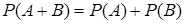
Исбот. Куйидаги белгилашларни киритамиз:
 — элементар ходисаларнинг умумий сони;
— элементар ходисаларнинг умумий сони;
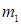
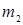
Ё А, ё В ходисанинг рўй беришига кулайлик
тугдирувчи элементар ходисалар сони 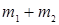
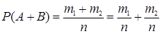
бўлади.
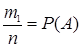 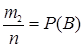
ни оламиз.
1-натижа. Бир нечта биргаликда бўлмаган ходисалар йигиндисининг эхтимоллиги бу ходисалар эхтимолликларининг йигиндисига тенг:
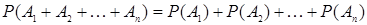
1-мисол. Кутида 30 та шар бор, улардан 10 таси кизил, 5 таси кўк ва 15 таси ок. Рангли шар чикишининг эхтимоллиги топилсин.
Ечиш. Рангли шарнинг чикиши ё кизил, ё кўк шарнинг чикишини билдиради.
Кизил шар чикиши (А ходиса)нинг эхтимоллиги 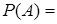 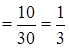 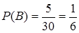
А ва В ходисалар биргаликда бўлмаган ходисалардир (бирор рангдаги шарнинг чикиши бошка рангдаги шарнинг чикишини истисно килади), шунинг учун кидирилаётган эхтимоллик
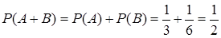
Карама-карши ходисалар биргаликда мукаррар ходисани ташкил этгани учун 1-теоремадан
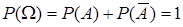
эканлиги келиб чикади, шу сабабли
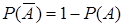
2-мисол. Кун давомида ёгингарчилик бўлишининг эхтимоллиги 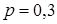
Ечиш.
«Кун давомида ёгингарчилик бўлади» ва «Кун очик» ходисалари карама-карши ходисалардир,
шунинг учун кидирилаётган эхтимоллик 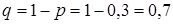
(2.1) формуладан куйидаги теоремани оламиз.
2-теорема (боглик ходисаларнинг эхтимолликларини кўпайтириш). Иккита боглик ходисалар кўпайтмасининг эхтимоллиги улардан бирининг эхтимоллигининг шу ходиса рўй берди деган фаразда хисобланган иккинчи ходиса шартли эхтимоллигига кўпайтмасига тенг:
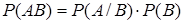
3-мисол. Йигувчида 3 та конуссимон ва 7 та эллипссимон валик бор. Йигувчи таваккалига аввал битта валикни, сўнгра эса иккинчи валикни олди. Биринчи валик конуссимон, иккинчиси эса эллипссимон эканлигининг эхтимоллиги топилсин.
Ечиш.
Биринчи валик конуссимон эканлиги (В ходиса)нинг эхтимоллиги 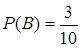 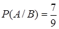
У холда (3.4) формулага асосан кидирилаётган эхтимоллик
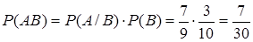
Энди А ва В ходисалар богликмас бўлган холга ўтамиз ва бу ходисалар кўпайтмасининг эхтимоллигини топамиз.
А ходиса
В ходисага боглик бўлмагани учун унинг  шартли
эхтимоллиги
шартли
эхтимоллиги  шартсиз
эхтимоллигига тенгдир, яъни
шартсиз
эхтимоллигига тенгдир, яъни
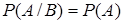
Бу ердан куйидаги теорема келиб чикади.
3-теорема (богликмас ходисаларнинг эхтимолликларини кўпайтириш). Иккита богликмас ходисалар кўпайтмасининг эхтимоллиги шу ходисалар эхтимолликларининг кўпайтмасига тенг:
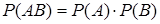
2-натижа. Бир нечта богликмас ходисалар кўпайтмасининг эхтимоллиги шу ходисалар эхтимолликларининг кўпайтмасига тенг:
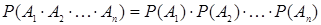
4-мисол. 10 тадан детали бор 3 та яшик мавжуд. 1-яшикда 8 та, 2-яшикда 7 та ва 3-яшикда 9 та стандарт деталь бор. Хар бир яшикдан таваккалига биттадан деталь олинмокда. Уччала олинган деталь стандарт бўлишининг эхтимоллиги топилсин.
Ечиш. 1-яшикдан стандарт деталь олиниши (А ходиса)нинг
эхтимоллиги 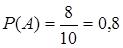 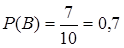 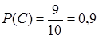
А, В ва С ходисалар богликмас бўлгани учун 2-натижага асосан кидирилаётган эхтимоллик
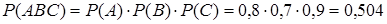
Энди А ва В ходисалар биргаликда бўлган холга ўтамиз ва бу ходисалар йигиндисининг эхтимоллигини топамиз.
4-теорема (биргаликда бўлган ходисаларнинг эхтимолликларини кўшиш). Иккита биргаликда бўлган ходисалар йигиндисининг эхтимоллиги бу ходисалар эхтимолликларининг йигиндисидан уларнинг кўпайтмаси эхтимоллигининг айирмасига тенг:
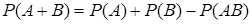
5-мисол. Биринчи ва иккинчи замбаракдан ўк узишда нишонга
тегиш эхтимолликлари мос равишда 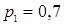 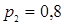
Ечиш. Хар бир замбаракдан нишонга тегиш эхтимоллиги бошка замбаракдан ўк узиш натижасига боглик эмас, шунинг учун А ходиса (биринчи замбаракдан нишонга тегиш) ва В ходиса (иккинчи замбаракдан нишонга тегиш) богликмас.
Шу сабабли АВ ходиса (иккала замбаракдан
нишонга тегиш)нинг эхтимоллиги 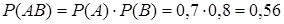
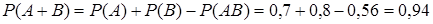
Агар богликмас 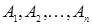
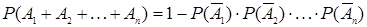
6-мисол. Босмахонада 4 та дастгох бор. Хар бир дастгохнинг айни шу пайтда ишлашининг эхтимоллиги 0,9 га тенг. Айни шу пайтда хеч бўлмаганда битта дастгох ишлаши (А ходиса)нинг эхтимоллиги топилсин.
Ечиш. Айни шу пайтда дастгох ишламаслигининг эхтимоллиги 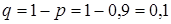 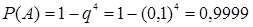
Агар ходисалар
биргаликда бўлмаса ва хаммаси жамланиб мукаррар ходисани ташкил этса, яъни 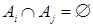 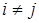 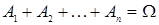
Фараз килайлик, А ходиса факат тўла группани
ташкил этувчи 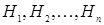 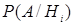 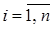
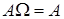 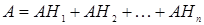
ларнинг биргаликда эмаслигидан 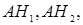 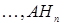
(3.1) формулани кўллаб, куйидагини оламиз
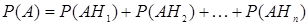
(3.4) формулага асосан ( ходисалар
боглик бўлиши хам мумкин) охирги ифоданинг ўнг томонидаги хар бир 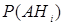 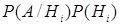
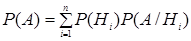
тўла эхтимоллик формуласини оламиз.
7-мисол. Деталларнинг 2 та тўплами бор. 1-тўпламдан таваккалига олинган деталь стандарт бўлишининг эхтимоллиги 0,8 га, иккинчисидан олинганники эса 0,9 га тенг. Таваккалига олинган тўпламдан таваккалига олинган деталнинг стандарт бўлиши эхтимолллиги топилсин.
Ечиш. А оркали «олинган деталь стандарт» ходисасини белгилайлик. Деталь ё 1-тўпламдан олиниши мумкин ( ходиса), ё 2-тўпламдан ( ходиса).
Деталь 1-тўпламдан олинишининг эхтимоллиги га, 2-тўпламдан олинишининг эхтимоллиги эса га тенг бўлади.
Мисол шартига асосан ва бўлади. У холда кидирилаётган эхтимоллик тўла эхтимоллик формуласига асосан топилади ва куйидагига тенг
.
Тўла эхтимоллик формуласини келтириб чикаришдаги ходисалар учун А ходиса рўй берган бўлсин ва гипотезаларнинг () шартли эхтимолликларини топиш масаласи кўйилган бўлсин.
(2.1) формуладан га эга бўламиз.
Сўнгра, (3.4) формуладан куйидагини оламиз
.
Тўла эхтимоллик формуласини кўллаб, бу ердан ва бундан аввалги муносабатдан
(3.9)
Байес формуласини келтириб чикарамиз.
8-мисол. Завод цехида тайёрланаётган деталларнинг стандарт эканлигини иккита назоратчидан бири текширади. Деталнинг 1-назоратчига тушиш эхтимоллиги 0,6 га, 2-назоратчига тушиш эхтимоллиги эса 0,4 га тенг. Ярокли деталнинг 1-назоратчи томонидан стандарт деб топилишининг эхтимоллиги 0,94 га, 2-назоратчи томонидан эса 0,98 га тенг бўлсин. Ярокли деталь текширувда стандарт деб топилди. Бу деталь 1-назоратчи томонидан текширилганлигининг эхтимоллиги топилсин.
Ечиш. А оркали ярокли деталь стандарт деб топилиши ходисасини белгилаймиз. Иккита фараз килиш мумкин
1) детални 1-назоратчи текширди ( гипотезаси);
2) детални 2-назоратчи текширди ( гипотезаси).
Мисол шартига асосан куйидагиларга эгамиз:
(деталнинг 1-назоратчига тушиш эхтимоллиги);
(деталнинг 2-назоратчига тушиш эхтимоллиги);
(ярокли деталнинг 1-назоратчи томонидан стандарт деб топилишининг эхтимоллиги);
(ярокли деталнинг 2-назоратчи томонидан стандарт деб топилишининг эхтимоллиги).
Кидирилаётган эхтимолликни Байес формуласи бўйича топамиз:
.
Назорат учун саволлар:
1. Биргаликда бўлмаган ходисалар эхтимолликларини кўшиш теоремаси нима хакида ва унинг исботи кандай?
2. Карама-карши ходисанинг эхтимоллиги нимага тенг?
3. Боглик ва богликмас ходисалар эхтимолликларини кўпайтириш теоремаларида нима хакида гап боради?
4. Биргаликда бўлган ходисалар эхтимолликларини кўшиш теоремаси нима хакида?
5. Хеч бўлмаганда битта ходисанинг рўй бериш эхтимоллигини кандай топиш мумкин?
6. Кайси ходисалар ходисаларнинг тўла группасини ташкил этади?
7. Тўла эхтимоллик формуласи нима ва у кандай келтириб чикарилади?
8. Байес формуласи нима ва у кандай келтириб чикарилади?